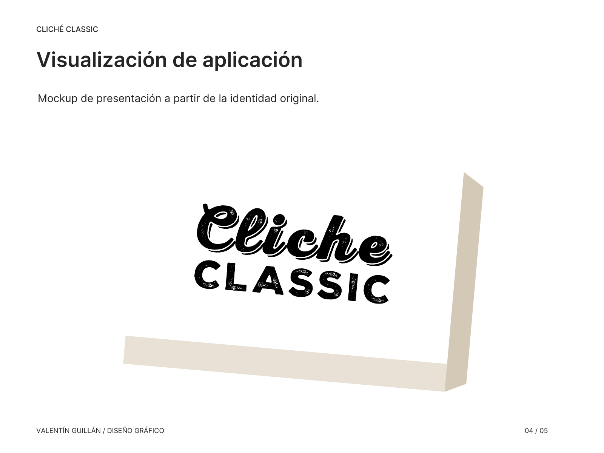

Todos los proyectos
Logo · Identidad visual
Cliché Classic
Logo e identidad visual para una pizzería.
Explorar el proyectoEl proyecto
Logo y piezas
del archivo original.
La selección reúne el logotipo, una de las caras originales de tarjeta y un sticker del archivo del proyecto.
- Cliente
- Cliché Classic
- Diseño
- Valentín Guillán
- Participación
- Diseño de logo e identidad visual
Desarrollo visual
La firma en una tarjeta
El logotipo blanco se presenta sobre fondo oscuro en una de las caras originales.
Desarrollo visual
Una pieza del archivo
Sticker con un personaje de pizza sobre un skate.

Visualización de aplicación: Cliché Classic

Participación y créditos
Cliché Classic
Diseño de logo e identidad visual: Valentín Guillán.